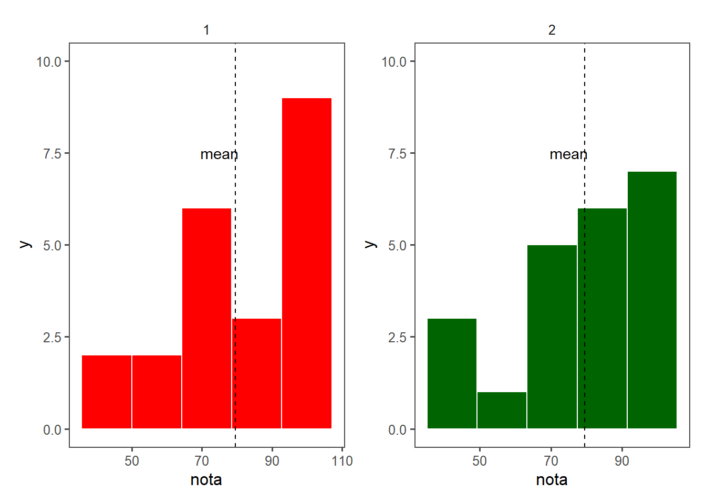
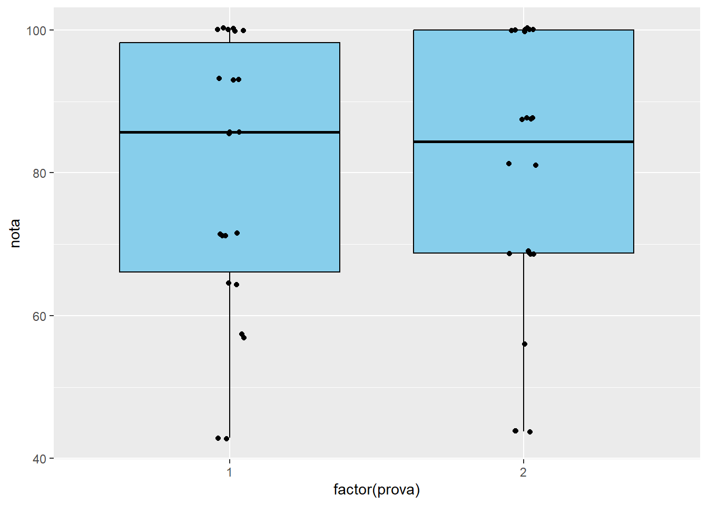

Foram carregadas as seguintes bibliotecas (pacotes) para desenvolver as análises.
Para a importação dos dados foi dado um conjunto de dados contendo as notas dos alunos nas provas 1 e 2 e foram importados usando o link de uma planilha Google seguindo as orientações do professor.
#Pacotes carregados:library(gsheet)
Warning: package 'gsheet' was built under R version 4.3.3
library(readxl)
Warning: package 'readxl' was built under R version 4.3.3
library(ggplot2)library(tidyverse)
Warning: package 'tidyverse' was built under R version 4.3.3
── Attaching core tidyverse packages ──────────────────────── tidyverse 2.0.0 ──
✔ dplyr 1.1.3 ✔ readr 2.1.4
✔ forcats 1.0.0 ✔ stringr 1.5.0
✔ lubridate 1.9.3 ✔ tibble 3.2.1
✔ purrr 1.0.2 ✔ tidyr 1.3.0
── Conflicts ────────────────────────────────────────── tidyverse_conflicts() ──
✖ dplyr::filter() masks stats::filter()
✖ dplyr::lag() masks stats::lag()
ℹ Use the conflicted package (<http://conflicted.r-lib.org/>) to force all conflicts to become errors
library(ggthemes)library(patchwork)
Warning: package 'patchwork' was built under R version 4.3.3
#importação dos dados via planilha Google:df1 <-gsheet2tbl("https://docs.google.com/spreadsheets/d/1bq2N19DcZdtax2fQW9OHSGMR0X2__Z9T/edit#gid=1092065531")df1$prova <-as.factor(df1$prova)
Inicialmente foi feita uma análise dos dados importados (descrevendo o que tem em 3 colunas (prova, pontos e nota):
Apesar dos dados terem uma distribuição bem similar, de forma visual podemos observar que os alunos foram melhores na prova2, quando comparado com a primeira prova, visto que as barras tem uma tendencia a aumentar depois da linha de marcação da média.
#Filtrando prova 1 prova1 <- df1 |>select (prova, nota) |>filter(prova =="1")#Filtrando prova 2 prova2 <- df1 |>select (prova, nota) |>filter(prova =="2") p1 <- prova1|>ggplot(aes(x = nota))+geom_histogram(bins =5, color ="white", fill ="red")+facet_grid(~prova)+theme_few(base_size =12)+geom_vline(xintercept =79.54, linetype =2) +annotate(geom ="text", x =75, y =7.5, label ="mean")+ylim(0,10) p2 <- prova2|>ggplot(aes(x = nota))+geom_histogram(bins =5, color ="white", fill ="darkgreen")+facet_grid(~prova)+theme_few(base_size =12)+geom_vline(xintercept =79.54, linetype =2) +annotate(geom ="text", x =75, y =7.5, label ="mean")+ylim(0,10) p1+p2

Quando se tem mais que 15 pontos usa-se o boxplot (usado quando se tem muita informação agregada), foram 22 notas na prova1 e 22 notas da prova2, demonstrando uma similaridade nos resultados das duas provas.
# boxplotdf1 |>ggplot(aes(factor(prova), nota))+geom_boxplot(color ="black", fill ="skyblue")+geom_jitter(width =0.05)

Abaixo pode-se observar a quantidade de pessoas que ficaram acima da média tanto na p1 e p2 quanto a diferença entre as notas acima da média nas duas provas.
#OBSERVAÇÃO DE QUANTAS PESSOAS FICARAM ACIMA DA MÉDIA EM P1.p1 <- df1 |>filter(prova ==1, nota >mean(nota)) |>nrow() /df1 |>filter(prova ==1) |>nrow() *100# em p2 mais pessoas ficaram acima da média como pode-se observar. p2 <- df1 |>filter(prova ==2, nota >mean(nota)) |>nrow() /df1 |>filter(prova ==2) |>nrow() *100#difrença entre p1 e p2 p1-p2
[1] -4.545455
Com isso foi plotado um gráfico com pontos das distribuições das notas, podendo-se contar os pontos, observando uma mínima diferença de uma nota acima da média em p2 quando comparada a p1 numericamente.
df1 |>ggplot(aes(y = nota, x = prova))+geom_jitter(width =0.36, size =2, shape =20, color ="black")+theme_few()+geom_vline(xintercept =1.5, linetype ="dotted")+ggtitle("Distribuição de notas de prova1 e prova2")+geom_hline(yintercept =mean(df1$nota),linetype ="dashed",color ='red',size =0.75)
Warning: Using `size` aesthetic for lines was deprecated in ggplot2 3.4.0.
ℹ Please use `linewidth` instead.
Conclusão:
Podemos observar que numericamente levando em conta a média os alunos foram melhores na segunda prova em comparação com a primeira aproximadamente 5% (referente a nota de um aluno de diferença) levando em conta os números. Entretanto não foram realizados testes estatísticos para demonstrar, apenas as análises numéricas (contagem) e gráficas acima. Visualmente podemos observar que se tem uma tendência as barras estarem mais concentradas acima da média na prova2.